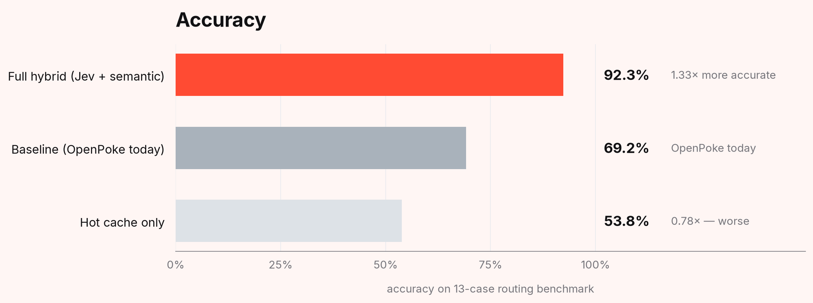
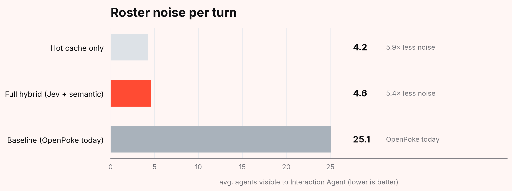
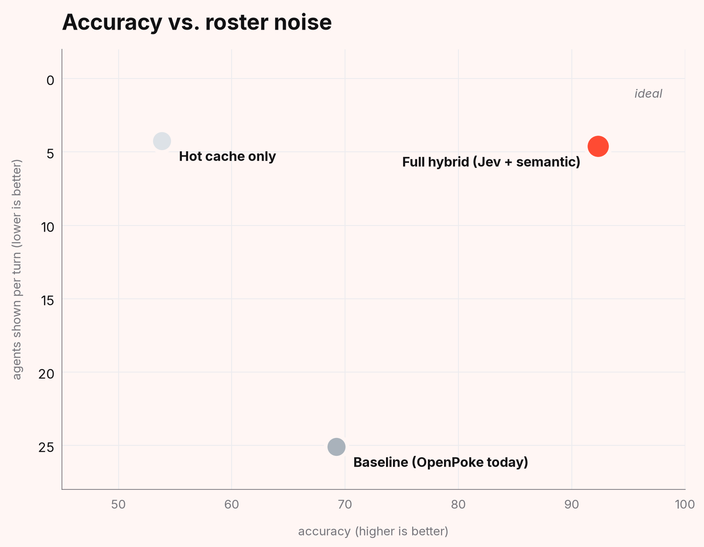

Fixing OpenPoke's execution agent overload.
After two weeks of use, OpenPoke's Interaction Agent sees every one of its hundreds of execution agents on every single message. Here's how a System 1 / System 2 pipeline using TypeSafe's Jev cuts that to five, while lifting routing accuracy from 69% to 92%.
What the Interaction Agent sees on day fourteen.
OpenPoke is a locally-runnable, open-source implementation of Poke — the iMessage-integrated assistant from Interaction Co. Its architecture is deliberately simple: a single Interaction Agent orchestrates work by delegating to persistent, specialized Execution Agents. "Email to Alice," "Vercel Job Offer," "Tokyo Restaurant Search" — each one owns a specific thread and sticks around indefinitely.
The system works beautifully on day one. By day fourteen, it does not.
Every message you send takes a trip through the same code path. The Interaction Agent reads the conversation history, loads every existing execution agent, and passes that full roster into Claude Sonnet's context before deciding what to do. On message one, that's three agents. On message 847, it's three hundred.
One function, fourteen lines.
The OpenPoke team called this "Execution Agent Overload" in their design notes and flagged it as the biggest unsolved gap. It lives entirely in one function in server/agents/interaction_agent/agent.py:
def _render_active_agents() -> str:
roster = get_agent_roster()
roster.load()
agents = roster.get_agents()
if not agents:
return "None"
rendered: List[str] = []
for agent_name in agents:
name = escape(agent_name or "agent", quote=True)
rendered.append(f'<agent name="{name}" />')
return "\n".join(rendered)No filtering, no ranking, no descriptions. The LLM gets handed every agent that ever existed, named only, and is expected to pick the right one every turn. Four things go wrong at once.
- Token cost scales linearly. At 500 agents, you're paying for 500 XML tags on every turn. A single complex OpenPoke request already triggers 10 to 15 LLM calls across the Interaction Agent and its spawned Execution Agents — the roster bloat compounds across all of them.
- Reasoning noise. LLMs do tool selection well when the right option is visible in a small set. Give them 500 lookalike names and recall drops — not catastrophically, but measurably. The baseline run of OpenPoke's current behaviour clocks in at 69.2% accuracy on a 13-case benchmark.
- Duplicate spawns. With a noisy roster, the IA struggles to find existing agents and starts creating new ones. "Email to Alice" alongside "Alice Chen email" alongside "Follow-up with Alice." The bloat compounds the bloat.
- Chat still pays the cost. When you message "hey, morning," the IA still receives the full roster — a reply that could cost nothing instead costs real tokens.
The data pipeline into the design is the problem, not the design itself.
Four shapes a fix could take.
The OpenPoke blog post that introduced this problem also proposed four potential fixes. Each one has an easy failure case.
Semantic search. Embed the agent descriptions, embed the query, retrieve top-K. This gets you a lot, but only if you have descriptions, and only if a top-K that solves most queries doesn't lose the handful that need deeper reasoning. Pure vector retrieval also has no notion of "I'm just chatting."
Archiving dormant agents. Hide agents that haven't been touched in X days. Simple, but fights the design philosophy of OpenPoke. Archive aggressively and you lose the "Tokyo trip from three months ago" use case that makes the system feel smart.
Clustering. Group related agents into topic buckets. The IA sees cluster labels and drills in as needed. Elegant on paper, but clusters are static while user queries are dynamic, and anything that creates a new concept outside existing clusters becomes homeless.
Hot cache. Keep the N most-recently-used agents always visible. Dirt simple, works for follow-ups, fails for anything older than a week. Later evaluation confirmed this is worse than doing nothing on this benchmark — more on that below.
A working solution can't just pick one. Mine layers them, with a cheap but effective System 1 judgement call in between.
System 1 and System 2.
Daniel Kahneman divided thinking into two modes. System 1 is fast, intuitive, pattern-based. System 2 is slow, deliberate, reasoning-based. They both have their jobs and are both necessary, but they fail when you use the wrong one for the task at hand.
Modern agentic pipelines treat LLMs like they're the only system available. Every decision, small or large, trivial or complex, gets handed to the same expensive, slow, deliberate reasoner. For routing between agents, which is pattern-matching work, this is overkill. The latency is wasted, the cost is wasted. Accuracy suffers too, because the LLM gets dragged down by noise it shouldn't have had to see.
In September 2026, TypeSafe AI released Jev, a model built for the System 1 job. You give it a state and a set of typed questions, and it returns calibrated decisions in 70-500ms at $0.042 per million input tokens. Instead of writing prose or doing open-ended reasoning, it classifies, ranks, scores, and verifies with real probabilities you can threshold against.
General Magic made this argument themselves in their insurance-specific-ai post, proposing three places Jev could slot into their document-retrieval pipeline: question routing, relevance reranking, and answer validation. The architectural insight generalizes — if you can frame a stage as "given this state, pick, rank, or verify," you probably don't need an LLM for it.
The pipeline that follows is the System 1 / System 2 split applied to OpenPoke's routing problem. Embeddings for cheap recall. Jev for fast precision. Claude Sonnet only for the one call that actually requires reasoning.
Five stages per user turn.
Every user message walks through four stages in sequence, plus a fifth that only fires on new-agent creation. The whole System 1 layer adds roughly 300ms and $0.0001 per turn, about 1% of the LLM call cost.
Stage 1 — The router
The query plus recent conversation history goes into a single Jev call that batches two Choice questions. intent is one of follow_up, new_task, or chat. domain is one of email, scheduling, research, draft, or other. The returned decision gates everything downstream. A chat intent means the Interaction Agent gets an empty roster — small talk doesn't need agents. Anything else proceeds.
Stage 2 — Semantic recall, then Jev rerank
Two sub-stages. First the query gets embedded via OpenAI's text-embedding-3-small (1536-dim), and cosine similarity is run against cached per-agent embeddings. Top 20 candidates come back. Then one batched Jev call fires 20 Noul questions in parallel — is agent at index N relevant to this query? Each Noul returns a calibrated probability. Candidates below 0.5 get dropped, the rest are sorted and trimmed to the top 8.
Stage 3 — The filtered roster
Pure code, no API calls. Takes the last-5-used agents (the hot cache) and the top-8 reranked matches, merges them, dedupes by name, and trims to 10. Each one gets rendered with its description — not just a name — because descriptions are what makes selection downstream work well.
Stage 4 — The Interaction Agent
The unchanged OpenPoke Interaction Agent, with one difference: instead of seeing 500 raw agent names, it sees 10 filtered entries with descriptions. The LLM call that happens here is the one everything upstream was setting up. All the Jev calls and embeddings exist to make this one Claude Sonnet call successful.
Stage 5 — The spawn verifier
Only fires when the IA decides to create a new agent. Before anything is persisted, one Jev call batches Noul questions over the hot cache plus top semantic matches — would spawning this new agent duplicate the responsibilities of this existing one? If the best match crosses 0.75 confidence, we redirect the task to the existing agent instead of creating a duplicate. This is the piece that attacks roster bloat at the source, rather than filtering around it after it's already happened.
Eval and benchmark.
I built a 13-case benchmark to validate the design and measure how much each stage pulls weight.
The cases span six categories, each stressing a different part of the pipeline: clean follow-ups (keyword-obvious), semantic follow-ups (weak keyword overlap, needs real embeddings), disambiguation (multiple valid-looking matches), stale (a dormant-but-correct agent that recency misses), spawn-only (nothing in the roster should match), and chat-only (small talk — no retrieval needed at all).
Three configurations are compared: the current OpenPoke baseline (full roster rendered name-only, no filtering), hot-cache-only (just the last five used agents, no retrieval), and the full System 1 / System 2 hybrid (router + semantic recall + Jev rerank + verifier).
Scoring is deterministic. For each case I build the exact <active_agents> block the Interaction Agent would see, parse the agent names out, then apply one of three pass/fail rules:
- Pick cases — pass if the expected agent name appears in the shown set.
- Spawn cases — pass if the shown set is small (≤10 agents) or empty. The pipeline shouldn't force an off-topic match when the user is starting net-new work.
- Chat cases — pass if the router flagged
intent="chat". Detecting small talk and skipping retrieval entirely is a pure Jev contribution; nothing else in the pipeline can do it.



Two findings.
Hot cache alone is worse than baseline.
The hot-cache-only config gets 53.8% accuracy — significantly below the no-filter baseline's 69.2%. Being concise but wrong is worse than being noisy but comprehensive. Hot cache misses anything older than a week, and misses semantic matches entirely. Recency without retrieval is actively lossy, not just incomplete. It's a useful data point against the simplest "just show the last five" instinct.
The System 1 layer costs almost nothing.
The Jev plus embedding stages combined add about $0.0001 and 300ms per user turn. In exchange, they cut the IA's input from 500 agents to 10, lift accuracy by 33% relative, and gate out "chat" turns that don't need any of this machinery at all. The LLM call is still the dominant cost at ~$0.01 and ~1.5s. The System 1 layer is about 1% of the LLM call cost, which is exactly the point.
Honest tradeoffs.
What this doesn't solve
- Multi-turn ambiguity. My benchmark is single-turn. When the system correctly says "I'm not confident" on an ambiguous query, it needs a clarification turn to resolve. I didn't build or test that.
- Scaling behaviour. 25 agents is a small roster. The real question is how this performs at 500 or 5,000. I'd expect embedding to stay cheap and Jev's rerank to stay around 300ms (batch cost scales linearly but is still fast), but I haven't verified.
What I'd build with more time
- Scale the benchmark across roster sizes 50, 100, 500, 1,000 and chart how each config degrades.
- Multi-turn test cases that specifically exercise clarification flows.
- LLM-judge scoring for ambiguous cases, so "the system correctly refused to guess" counts as a pass rather than a miss.
- Wire the eval into CI so threshold tuning can't silently regress.